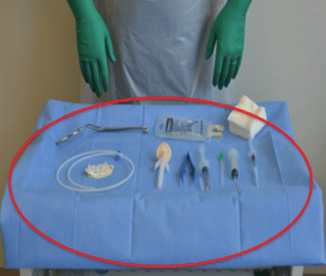
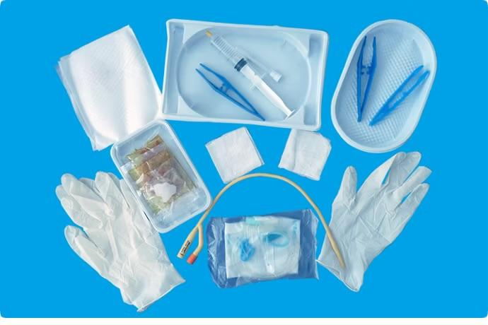
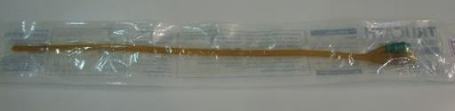
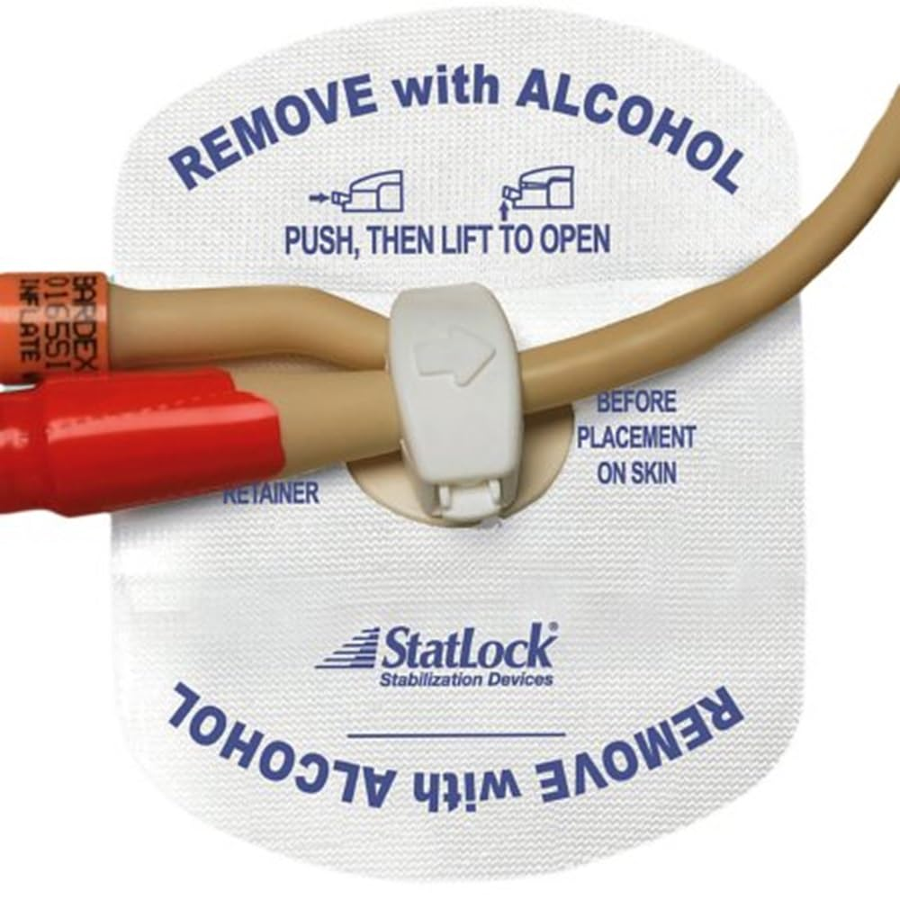

Catheterisation Procedure Explanation
Your next patient has presented to the Emergency department with urinary retention.
Task:
- Explain the catheterization procedure to your medical student
Introduction
- Introduce yourself to the patient
- Explain:
- What the procedure involves
- The steps of the procedure
- What the procedure involves
- Explain required exposure:
- Private parts need to be fully exposed
- Underwear to be removed
- Private parts need to be fully exposed
- Provide:
- Privacy to undress
- A sheet to cover the patient
- Privacy to undress
- Offer a chaperone
- Required as this is an examination/procedure of private parts
- Should be offered even if examiner and patient are the same gender
- Required as this is an examination/procedure of private parts
- Discuss indication if mentioned in the stem
- Example:
- Urinary retention → indication for catheterisation
- Urinary retention → indication for catheterisation
- Explain possible risks and complications, for example:
- Urinary tract infection
- Urethral injury
- Allergy to latex or catheter material
- Urinary tract infection
- Large list possible
- Candidate may add risks, but must explain some
- Gain informed consent
- Consent must be:
- Explained
- Obtained
- Documented
- Explained
- Documentation discussed briefly here and in detail later
Prepare the following equipment
- Dressing trolley
- Catheterization pack and drapes
- Sterile gloves
- Appropriate size catheter
- Sterile Lubricant and/or Xylocaine jelly syringe
- Sterile water to inflate balloon
- 5ml/10ml Syringe
- Sterile normal saline / chlorhexidine
- Straps/tape to secure catheter to leg
- Drainage bag
- Waterproof sheet
Hand Hygiene – Overview
- This is a procedure, so hand hygiene must be explained formally
- Hand hygiene occurs multiple times
- Instead of repeating, use:
- Five key moments of hand hygiene
- Five key moments of hand hygiene
Five Key Moments
- Before touching a patient
- Before a procedure
- After a procedure or body fluid exposure risk
- After touching a patient
- After touching patient surroundings
Emphasize:
- Hand hygiene is critical
- This is an aseptic procedure
- Perform hand hygiene:
- Wash hands (e.g. 2 minutes, per guidelines)
- Wash hands (e.g. 2 minutes, per guidelines)
- Wear:
- Gloves
- Personal protective equipment (say “personal protective equipment”, not PPE)
- Gloves
- Because of body fluids:
- Mask
- Gown
- Eye protection
- Mask
11. Aseptic Field Preparation

- Explain creation of aseptic field
- Open catheterisation pack using aseptic technique

- Place it on the dressing trolley → this becomes the aseptic field
- Add additional sterile items to the field:
- Sterile gloves
- Catheter
- Sterile gloves
- Use aseptic non-touch technique
12. Catheter Packaging Explanation

- Catheter usually has:
- Outer non-sterile wrapping
- Inner sterile wrapping
- Outer non-sterile wrapping
- Steps:
- Open non-sterile outer wrapping
- Place sterile-wrapped catheter onto aseptic field
- Do not touch sterile wrapping before sterile gloves
- Open non-sterile outer wrapping
13. Preparing Equipment on the Aseptic Field
- Squeeze sterile water into bowl ready for balloon inflation.
- Pour cleaning solution (aqueous chlorhexidine 0.1 per cent or, where resident has allergy to chlorhexidine, sterile saline) over sterile swabs.
- Open sterile glove packet and open packet containing urinary drainage bag.
- Wash hands for 30 seconds, dry with sterile towel and don sterile gloves.
- Draw up sterile water into syringe for the catheter balloon - use only the amount of water labelled on the catheter (omit if in- out catheter
Procedure Proper – Step by Step
Step 1: Preparation of Penis
- Lift penis
- Retract foreskin (if present)
- Do not forget foreskin
Step 2: Cleaning the Field
- Hold penis with non-dominant hand
- Retract foreskin
- Using dominant hand:
- Clean from tip downwards
- One stroke per swab
- OR circular motion from urethral opening outward
- Clean from tip downwards
- Purpose:
- Remove bacteria from the field
- Remove bacteria from the field
- Discard swabs into waste
15. Lignocaine Gel – Two Methods
Method 1 (Simple)
- Apply 2 mL lignocaine gel to catheter tip
- Lubricate catheter tip
Method 2 (Preferred / NSW Guidelines)
- Hold the penis at right angle to the body and insert the lignocaine nozzle into urethral meatus. Inject the lignocaine gel into the urethra ensuring firm seal around the meatus. Compress the penis and hold for 3-5 minutes to contain the gel within the urethra.
16. Catheter Insertion
- Hold the penis with slight upward tension and at a 90deg angle and perpendicular to the body. Insert the catheter.
- When the first sphincter is reached (at level of pelvic floor muscles) gently bring the penis down to face the toes, apply constant gentle pressure
17. Balloon Inflation
- If urine flows:
- Inflate balloon with sterile water
- Use volume specified on catheter (commonly 10 mL)
- Inflate balloon with sterile water
- If no urine flow:
- Do not inflate balloon
- Do not inflate balloon
18. Completion of Procedure
- Reposition foreskin, if uncircumscribed
- Secure catheter:
- Statlock catheter securing device

- Or other securing device
- Or other securing device
- Attach catheter to drainage bag
19. Aftercare
- Dispose waste
- Remove gloves
- Perform hand hygiene
20. Documentation (Detailed)
Document:
- How consent was obtained and whom it was obtained from
- Indication for catheterisation
- Catheter option used (in/out, IDC, SPC)
- Size and type of catheter
- Time and date of insertion
- Balloon volume in
- Total urine volume drained on insertion (refer to the fluid balance chart)
- Any abnormalities observed during or after catheter insertion (e.g. pain, bleeding)
- Any clinical complications during insertion (e.g. false passage, haematuria)
- Presence of UTI signs and symptoms
- Colour of urine, sediment or abnormality
- Whether a urine specimen for urinalysis/culture was collected
Examiner’s Key Scoring Areas
Explain these properly
- Consent and explanation
- Risks and complications
- Chaperone
- Hand hygiene (proper explanation)
- Aseptic technique
- Basic catheterisation steps
- Documentation explanation